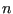
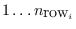
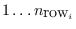
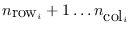
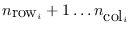

The main underlying principle of the PSBLAS library is that the
library objects are created and exist with reference to a discretized
space to which there corresponds an index space and a matrix sparsity
pattern. As an example, consider a cell-centered finite-volume
discretization of the Navier-Stokes equations on a simulation domain;
the index space  is isomorphic to the set of cell centers,
whereas the pattern of the associated linear system matrix is
isomorphic to the adjacency graph imposed on the discretization mesh
by the discretization stencil.
is isomorphic to the set of cell centers,
whereas the pattern of the associated linear system matrix is
isomorphic to the adjacency graph imposed on the discretization mesh
by the discretization stencil.
Thus the first order of business is to establish an index space, and
this is done with a call to psb_cdall in which we specify the
size of the index space  and the allocation of the elements of the
index space to the various processes making up the MPI (virtual)
parallel machine.
The index space is partitioned among processes, and this creates a
mapping from the ``global'' numbering  to a numbering
``local'' to each process; each process
to a numbering
``local'' to each process; each process  will own a certain subset
, each element of which corresponds to a certain
element of
will own a certain subset
, each element of which corresponds to a certain
element of  . The user does not set explicitly this mapping;
when the application needs to indicate to which element of the index
space a certain item is related, such as the row and column index of a
matrix coefficient, it does so in the ``global'' numbering, and the
library will translate into the appropriate ``local'' numbering.
. The user does not set explicitly this mapping;
when the application needs to indicate to which element of the index
space a certain item is related, such as the row and column index of a
matrix coefficient, it does so in the ``global'' numbering, and the
library will translate into the appropriate ``local'' numbering.
For a given index space  there are many possible associated
topologies, i.e. many different discretization stencils; thus the
description of the index space is not completed until the user has
defined a sparsity pattern, either explicitly through
there are many possible associated
topologies, i.e. many different discretization stencils; thus the
description of the index space is not completed until the user has
defined a sparsity pattern, either explicitly through psb_cdins
or implicitly through psb_spins. The descriptor is finalized
with a call to psb_cdasb and a sparse matrix with a call to
psb_spasb. After psb_cdasb each process  will have
defined a set of ``halo'' (or ``ghost'') indices
, denoting elements of the index
space that are not assigned to process
will have
defined a set of ``halo'' (or ``ghost'') indices
, denoting elements of the index
space that are not assigned to process  ; however the
variables associated with them are needed to complete computations
associated with the sparse matrix
; however the
variables associated with them are needed to complete computations
associated with the sparse matrix  , and thus they have to be
fetched from (neighbouring) processes. The descriptor of the index
space is built exactly for the purpose of properly sequencing the
communication steps required to achieve this objective.
, and thus they have to be
fetched from (neighbouring) processes. The descriptor of the index
space is built exactly for the purpose of properly sequencing the
communication steps required to achieve this objective.
A simple application structure will walk through the index space allocation, matrix/vector creation and linear system solution as follows:
psb_init
psb_cdall
psb_spall
and psb_geall
psb_spins and psb_geins
psb_cdasb
psb_spasb
psb_geasb
psb_precset and
build it with psb_precbld
psb_bicgstab
test/pargen/ppde.f90.
For a simulation in which the same discretization mesh is used over multiple time steps, the following structure may be more appropriate:
psb_init
psb_cdall
psb_cdins
psb_cdasb
psb_spall and psb_geall
psb_sprn; also zero out
the dense vectors;
psb_spins and psb_geins
psb_spasb and psb_geasb
psb_precset and
psb_precbld
psb_bicgstab
In principle there is no specific order in the calls to
psb_spins, nor is there a requirement to build a matrix row in
its entirety before calling the routine; this allows the application
programmer to walk through the discretization mesh element by element,
generating the main part of a given matrix row but also contributions
to the rows corresponding to neighbouring elements.
From a functional point of view it is even possible to execute one
call for each nonzero coefficient; however this would have a
substantial computational overhead. It is therefore advisable to pack
a certain amount of data into each call to the insertion routine, say
touching on a few tens of rows; the best performng value would depend
on both the architecture of the computer being used and on the problem
structure.
At the opposite extreme, it would be possible to generate the entire
part of a coefficient matrix residing on a process and pass it in a
single call to psb_spins; this, however, would entail a
doubling of memory occupation, and thus would be almost always far
from optimal.